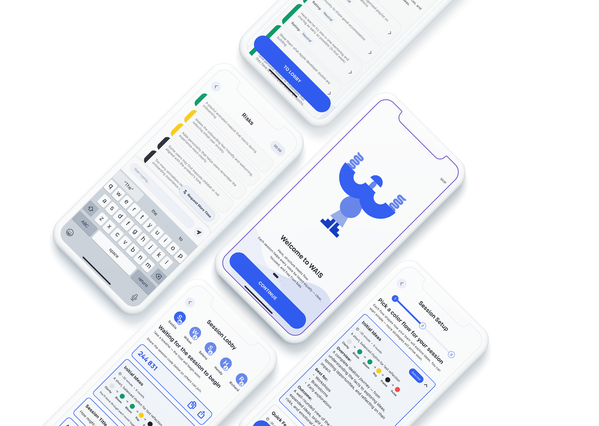
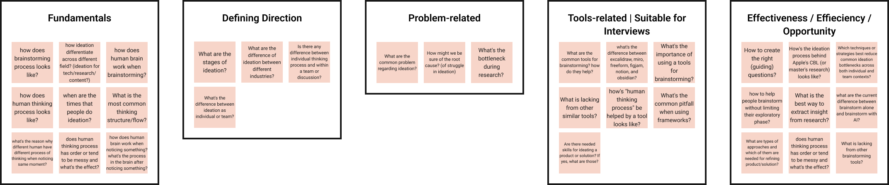

WAIS - THINK IN COLORS
ROLE
UX Designer & Illustrator
TIMELINE
2025
TOOLS
Figma, Lottie, Miro
WAIS is a guided ideation tool designed to help teams think with clarity and psychological safety. By combining structured thinking modes with anonymity and authentic summaries, WAIS reimagines how groups brainstorm — with structure, empathy, and creative freedom.

MY ROLE
Throughout the project, I focused mainly on experience design while collaborating closely with the rest of the team.
My contributions included:
- conducting user interviews and synthesizing insights
- defining problem framing and concept direction
- facilitating feature ideation
- creating user flows, wireframes, and prototypes
- designing onboarding, dashboard, and color rounds
- developing visual identity, illustrations, and tone
- writing UX copy and guidance
- collaborating on design token implementation
- assisting with UI implementation and Lottie animations
HOW IT BEGINS
During my time at the Apple Developer Academy, ideation was part of our everyday work. Across six different project challenges and frequently changing teammates, discussions became the backbone of how we aligned, generated ideas, and made decisions together. While we initially explored topics like posture and doomscrolling, both revealed limitations early on and felt disconnected from the problems we faced most often.
What resonated more deeply was brainstorming itself. It was something we struggled with daily and knew would remain relevant in our future careers in tech and design. Instead of forcing a direction, we framed early research questions around how teams generate ideas, facilitate discussions, and where ideation tends to break down.
HOW IT BEGINS
During my time at the Apple Developer Academy, ideation was part of our everyday work. Across six different project challenges and frequently changing teammates, discussions became the backbone of how we aligned, generated ideas, and made decisions together. While we initially explored topics like posture and doomscrolling, both revealed limitations early on and felt disconnected from the problems we faced most often.
What resonated more deeply was brainstorming itself. It was something we struggled with daily and knew would remain relevant in our future careers in tech and design. Instead of forcing a direction, we framed early research questions around how teams generate ideas, facilitate discussions, and where ideation tends to break down.

Early guiding questions used to explore real pain points in team ideation
UNDERSTANDING THE FRICTION IN TEAM BRAINSTORMING
Our guiding questions shaped interviews with people inside and outside the Academy, including architects, DevOps engineers, QA, R&D, and other creative roles. Despite different backgrounds, the same frustrations surfaced repeatedly. Brainstorming sessions were often described as unclear and exhausting—discussions drifted without shared goals, ideas and critiques mixed too early, and emotional dynamics influenced outcomes. Dominant voices tended to lead, while quieter members held back despite valuable input.
Many interviewees said building on others' ideas felt positive but difficult in practice. Although some knew ideation principles like Osborn's rules, most struggled to apply them consistently during real discussions. This gap between understanding the rules and practicing them became a recurring problem.
From these insights, we realized that teams didn't lack ideas, instead they lacked environments that supported shared thinking. Teams needed both focus and psychological safety to speak openly. When discussions were too open, people felt lost; when too rigid, they felt constrained. The core challenge was balancing clarity with openness in team ideation.